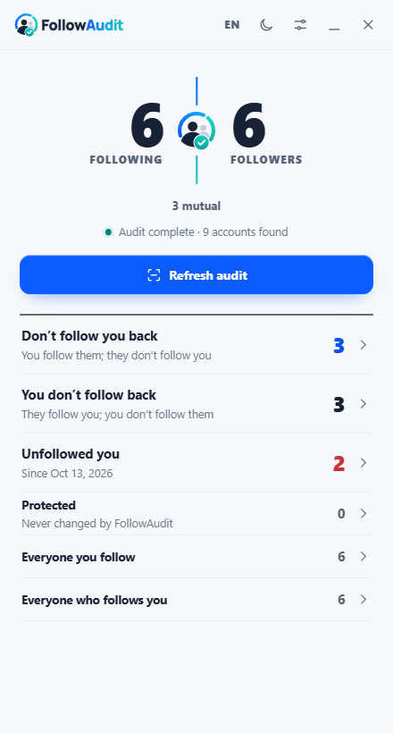
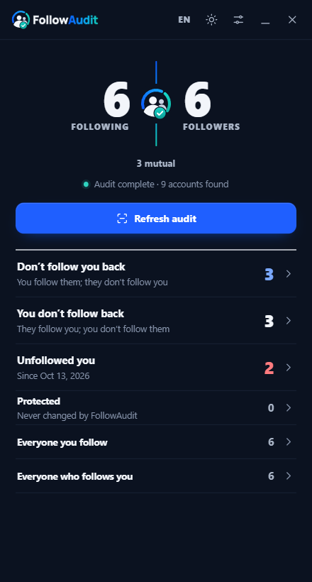

The panel


Docked beside Instagram, it opens as a report: both counts, who doesn't follow back, and who left since last time.
Try the live previewInstagramTikTokDesktop browser
FollowAudit compares both sides of your Instagram or TikTok in one audit, keeps the people who matter protected, and changes nothing until you confirm. It runs entirely in your browser.


Docked beside Instagram, it opens as a report: both counts, who doesn't follow back, and who left since last time.
Try the live previewFollowingvsFollowers
One audit loads both lists once and matches every account.
TodayvsLast audit
See exactly who unfollowed you since the previous audit.
FriendsvsThe queue
Protected accounts never enter an action queue. Back up the list as a file.
SpeedvsSafety
One action at a time, with pauses and time left, stopping by itself if Instagram pushes back.
InstagramvsTikTok
A live audit on Instagram; the official data export, read-only, on TikTok.
On a Mac, open the console with Cmd + Option + J and paste with Cmd + V. Chrome may ask you to type “allow pasting” the first time.
No passwordIt uses the Instagram tab you already have open.
No serverNo backend, no analytics, nothing uploaded.
Protected stays protectedMarked accounts are never touched.
Open sourceMIT licensed. Read every line before you run it.
FollowAudit reads your lists from your own logged-in session and keeps them in memory. The only things it saves, in your browser, are the accounts you protect and your last follower list, so it can tell you who left. Clear both at any time in Settings.
FollowAudit is not affiliated with Instagram, Meta, TikTok or ByteDance. Instagram support uses private web endpoints that can change without notice, and heavy activity can trigger platform limits.
The script talks only to Instagram, from your own logged-in tab, and never to a third-party server. It reads lists page by page, never retries an unfollow, pauses between actions and stops as soon as Instagram refuses a request.
No. It runs inside the Instagram tab you already have open and uses that session.
Running inside the page is what keeps it private: no extension permissions, no app login, no server in the middle. You can read the full source on GitHub before running it.
After each audit, FollowAudit saves follower IDs and usernames in your browser. The next audit compares against them. You can clear this history at any time in Settings.
Not yet. Mobile browsers do not offer a developer console, so you need a desktop browser.
Yes. FollowAudit is free and open source under the MIT license.